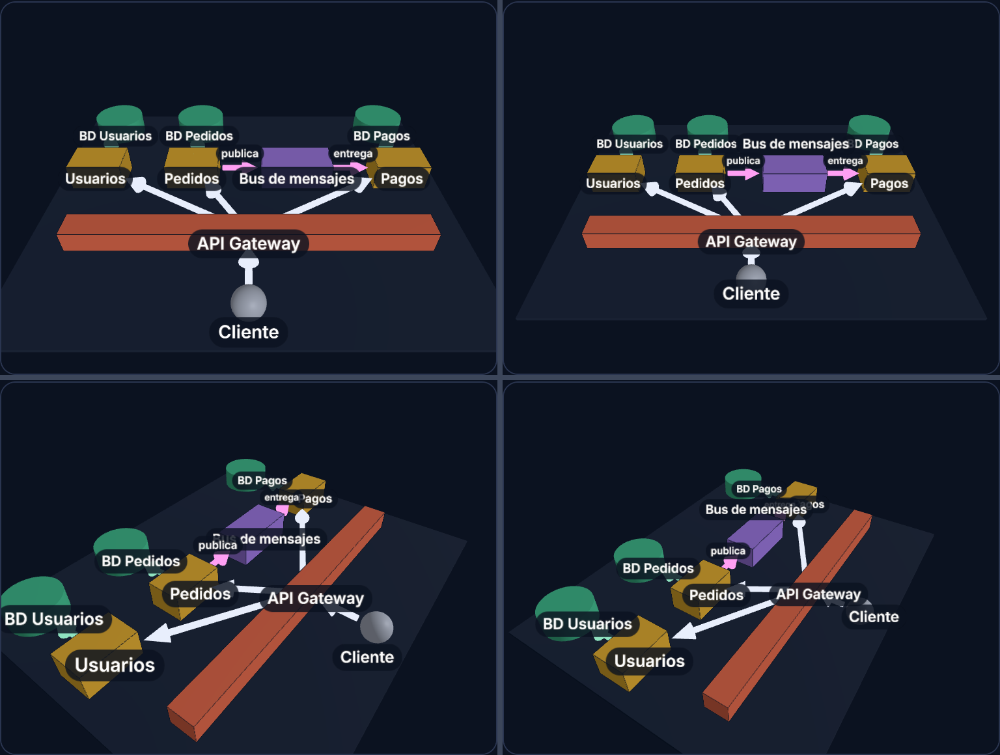

En el teléfono: «publica» se superponía a «Bus de mensajes» al girar, y «Cliente» quedaba cortado por el borde inferior. El emulador probaba la lógica; esto era presentación.
Portada
Electiva · PWA — Sub-bloque B · Proyecto Módulo AR · Sesión 15 de 19
UX/UI de instalación
El Atlas ya era instalable, pero nadie se lo decía al usuario. Hoy guarda el aviso de Chrome y lo ofrece en un botón propio, explica qué hacer en iPhone, avisa cuando se queda sin conexión y corrige los rótulos que se pisaban.
AsignaturaElectiva - PWA
Sesión15 de 19 · Proyecto Módulo AR
InstituciónUPTC
SESIÓN 15
Instalar es una conversación
El navegador decide cuándo una página es instalable; la página decide cómo ofrecerlo. Hoy escribimos esa mitad: un botón propio, cinco estados, un plan B para iOS y una banda de conexión.
beforeinstallpromptCinco estadosSin conexión
Antes de empezar
Objetivos de aprendizaje
- Explicar quién decide qué en la instalación: el navegador decide cuándo, la página decide cómo.
- Guardar
beforeinstallprompty usarlo en un botón propio, una vez y dentro de un clic. - Distinguir cinco estados de instalación, con el plan B manual de iOS.
- Mostrar la conexión con
online/offline, sabiendo qué garantizanavigator.onLine. - Probar con un evento simulado, y comprobar que la prueba falla cuando el código se rompe.
- Corregir con datos un defecto visual visto en un teléfono real.
.zip
Recursos: pwa-ar-objetos3d-sesion40.zip
CHECKPOINT · CIERRE DE LA SESIÓN 40 · PUNTO DE PARTIDA
El Atlas con los tres modelos, fichas, AR y salida defensiva.
.zip
Recursos: pwa-ar-objetos3d-sesion41.zip
VERSIÓN TERMINADA DE ESTA SESIÓN
Agrega instalar.ts, conexion.ts y la zona de instalación. Intenta construirlo tú primero.
Instalar · 1.1
El navegador decide cuándo; la página, cómo
1
El navegador decide cuándo
Para Chrome: no estar instalada, HTTPS, un toque al menos y 30 s viendo la página, y un manifest con nombre, iconos de 192 y 512 px, start_url y display.
2
La página decide cómo
Cuando se cumple todo, Chrome dispara beforeinstallprompt. La página puede guardarlo y mostrarlo después en un botón propio.
Hasta hoy el Atlas solo escuchaba
appinstalled, que llega cuando ya se instaló: nada invitaba a instalar. Criterios según web.dev; cambian entre versiones.Instalar · 1.2
El manifest ya cumple
public/manifest.json
{
"name": "Atlas 3D de Arquitectura de Software",
"short_name": "Atlas 3D",
"description": "Catálogo interactivo en 3D de patrones y arquitecturas de software, con soporte de realidad aumentada.",
"start_url": "./",
"scope": "./",
"display": "standalone",
"background_color": "#0b1220",
"theme_color": "#0b1220",
"icons": [
{ "src": "iconos/icon-192.png", "sizes": "192x192", "type": "image/png" },
{ "src": "iconos/icon-512.png", "sizes": "512x512", "type": "image/png" },
{ "src": "iconos/icon-512-maskable.png", "sizes": "512x512", "type": "image/png", "purpose": "maskable" }
]
}Desde la Sesión 27: nombre, iconos (192, 512 y maskable),
start_url y display: standalone. Hoy no cambia: cambia lo que la página hace con el aviso.Instalar · 1.3
Dos consecuencias prácticas
1
El botón no sale «al abrir»
Depende de que Chrome ya haya disparado el evento: hay que interactuar con la página y esperar un rato antes de verlo.
2
No existe en todos los navegadores
Safari de iPhone no lo dispara: ahí la instalación es un gesto manual y la página solo puede explicarlo.
El evento · 2.1
Declarar lo que se usa del evento
src/instalar.ts (tipo)
interface EventoInstalacion extends Event {
prompt(): Promise<void>;
userChoice: Promise<{ outcome: "accepted" | "dismissed"; platform: string }>;
}TypeScript no trae este evento: se declara solo lo necesario,
prompt() y la promesa userChoice.El evento · 2.2
Escuchar y guardar
src/instalar.ts (iniciarInstalacion)
export function iniciarInstalacion(alCambiar: () => void): void {
avisar = alCambiar;
window.addEventListener("beforeinstallprompt", (e) => {
// Sin esto, Chrome móvil muestra su propia barrita de «Instalar». Se guarda para usarlo en NUESTRO botón.
e.preventDefault();
evento = e as EventoInstalacion;
rechazada = false;
avisar();
});
window.addEventListener("appinstalled", () => {
evento = null; // ya no sirve
recienInstalada = true;
avisar();
});
// Cambiar entre pestaña del navegador y ventana de app también cambia el modo de visualización.
window.matchMedia("(display-mode: standalone)").addEventListener("change", () => avisar());
avisar();
}preventDefault() evita la barra propia de Chrome y cede la decisión: el evento se guarda para usarlo en nuestro botón.El evento · 2.3
Usarlo una sola vez
src/instalar.ts (pedirInstalacion)
export async function pedirInstalacion(): Promise<"accepted" | "dismissed" | "no-disponible"> {
if (!evento) return "no-disponible";
const guardado = evento;
evento = null; // un evento solo se puede usar una vez: se suelta antes de esperar la respuesta
await guardado.prompt();
const { outcome } = await guardado.userChoice;
rechazada = outcome === "dismissed";
avisar();
return outcome;
}Se suelta (
evento = null) antes de esperar la respuesta: un evento solo sirve una vez.El evento · 2.4
Dos reglas del navegador
1
prompt() pide un gesto
Solo funciona dentro de un clic o toque del usuario; si no, lanza un error. Por eso el botón es quien lo llama.
2
Un evento, un uso
Si la persona cancela, el botón no tiene qué reutilizar: espera a que Chrome dispare un evento nuevo.
Estados · 3.1
Cinco estados, cinco textos
| Estado | Cómo se sabe | Qué muestra |
|---|---|---|
| instalada | display-mode: standalone o navigator.standalone | «✓ Estás usando Atlas 3D como app instalada.» |
| recién instalada | appinstalled en esta visita | «✓ Instalada. Ábrela desde su icono…» |
| instalable | Hay un evento guardado | El botón «⬇ Instalar Atlas 3D» |
| iOS | Agente de iPhone/iPad (o «Mac» táctil) | Compartir → «Añadir a pantalla de inicio» |
| no disponible | Ninguno de los anteriores | Menú del navegador → «Instalar app» |
Estados · 3.2
Cómo se sabe que ya está instalada
src/instalar.ts (estaInstalada)
export function estaInstalada(): boolean {
// Android/escritorio: el modo de visualización del manifest. iOS: la propiedad no estándar «standalone».
return window.matchMedia("(display-mode: standalone)").matches || (navigator as Navigator & { standalone?: boolean }).standalone === true;
}Android y escritorio: el modo de visualización del manifest. iOS: la propiedad no estándar
standalone.Estados · 3.3
El orden de las preguntas
src/instalar.ts (estadoInstalacion)
export function estadoInstalacion(): EstadoInstalacion {
if (estaInstalada()) return "instalada";
if (recienInstalada) return "recien-instalada";
if (evento) return "instalable";
if (esIOS()) return "ios";
return "no-disponible";
}Instalada va primero: si se preguntara antes por el evento, una app abierta desde su icono podría invitarte a instalar lo que ya instalaste (escenario E).
Interfaz · 4.1
La zona en index.html
index.html
<section class="instalar-zona" aria-labelledby="titulo-instalar">
<h2 id="titulo-instalar">Instalar la app</h2>
<div class="instalar-barra">
<button type="button" id="btn-instalar" hidden>⬇ Instalar Atlas 3D</button>
<span id="estado-instalacion" class="estado-instalacion" role="status"></span>
</div>
</section>Un botón que empieza oculto y un texto con
role="status": los lectores de pantalla anuncian los cambios.Interfaz · 4.2
Una función decide qué se ve
src/main.ts (pintarInstalacion)
function pintarInstalacion(): void {
const estado = estadoInstalacion();
btnInstalar.hidden = estado !== "instalable";
estadoInstalacionEl.textContent =
estado === "instalada" ? TEXTO_INSTALACION.instalada
: estado === "recien-instalada" ? TEXTO_INSTALACION.recienInstalada
: estado === "instalable" ? TEXTO_INSTALACION.instalable
: estado === "ios" ? TEXTO_INSTALACION.ios
: instalacionRechazada() ? TEXTO_INSTALACION.rechazada
: TEXTO_INSTALACION.noDisponible;
}Se llama al arrancar y cada vez que algo cambia: llega el evento, se instala, se pasa de pestaña a ventana de app.
Interfaz · 4.3
El clic solo pide; no pinta
src/main.ts (clic)
btnInstalar.addEventListener("click", async () => {
btnInstalar.disabled = true;
try {
await pedirInstalacion(); // el resultado lo pinta pintarInstalacion() vía iniciarInstalacion
} finally {
btnInstalar.disabled = false;
}
});
iniciarInstalacion(pintarInstalacion);El resultado entra por el mismo camino que cualquier otro cambio de estado:
iniciarInstalacion(pintarInstalacion).Interfaz · 4.4
Tres momentos de la zona de instalación

Sin evento · con el evento guardado · tras
appinstalled. El evento es simulado (sección de pruebas).Conexión · 5.1
Escuchar online y offline
src/conexion.ts
export function iniciarConexion(alCambiar: (enLinea: boolean) => void): () => void {
const alSubir = () => alCambiar(true);
const alBajar = () => alCambiar(false);
window.addEventListener("online", alSubir);
window.addEventListener("offline", alBajar);
alCambiar(navigator.onLine);
return () => {
window.removeEventListener("online", alSubir);
window.removeEventListener("offline", alBajar);
};
}Llama a «alCambiar» al arrancar y cada vez que cambie, y devuelve cómo dejar de escuchar.
Conexión · 5.2
navigator.onLine miente en una dirección
| Valor | Qué garantiza | Qué NO garantiza |
|---|---|---|
false | Fiable: el dispositivo no tiene red. | — |
true | Hay alguna red (wifi o datos). | Que llegue a Internet o que el servidor responda: un wifi sin salida también da true. |
Por eso la banda solo habla cuando el navegador dice «sin conexión», y el aviso de vuelta dice «Volvió la conexión», no «el servidor responde». Comprobarlo de verdad: Actividad 2.
Conexión · 5.3
La banda: se queda, avisa y se esconde
src/main.ts (banda)
let estuvoSinConexion = false;
let temporizadorConexion: number | undefined;
iniciarConexion((enLinea) => {
window.clearTimeout(temporizadorConexion);
if (!enLinea) {
estuvoSinConexion = true;
estadoConexionEl.hidden = false;
estadoConexionEl.textContent = "Sin conexión: los modelos y las fichas descargadas siguen disponibles.";
} else if (estuvoSinConexion) {
estuvoSinConexion = false;
estadoConexionEl.hidden = false;
estadoConexionEl.textContent = "Volvió la conexión.";
temporizadorConexion = window.setTimeout(() => { estadoConexionEl.hidden = true; }, 3000);
} else {
estadoConexionEl.hidden = true;
}
});El texto dice qué sigue funcionando, no solo qué se perdió.
Conexión · 5.4
La banda de «sin conexión»

Pegada arriba con
position: sticky: se ve aunque la página esté desplazada.Pruebas · 6.1
Compilación real
Terminal
$ npm run build
✓ 27 modules transformed.
dist/index.html 3.99 kB │ gzip: 1.40 kB
dist/assets/index-B68nsmLq.css 6.29 kB │ gzip: 1.78 kB
dist/assets/workbox-window.prod.es5-BqEJf4Xk.js 5.71 kB │ gzip: 2.34 kB
dist/assets/index-RQVUra6j.js 544.86 kB │ gzip: 141.78 kB
✓ built in 3.29s
PWA v1.3.0
✓ 89 modules transformed.
dist/sw.mjs 27.66 kB │ gzip: 9.16 kB
✓ built in 531ms
PWA v1.3.0
mode injectManifest
format: es
precache 8 entries (557.95 KiB)Precaché: 554,43 → 557,95 KiB, siempre 8 entradas. Paquete principal: 542,45 → 544,86 kB. El Service Worker no cambió.
Pruebas · 6.2
Simular el evento que Chrome no dispara
test_s41.js (el evento simulado)
const EVENTO = (resultado) => `
window.__prompts = 0;
window.__simular = (resultado) => {
const e = new Event('beforeinstallprompt', { cancelable: true });
e.prompt = async () => { window.__prompts++; };
e.userChoice = Promise.resolve({ outcome: resultado, platform: 'web' });
window.dispatchEvent(e);
return e.defaultPrevented;
};`;Mismo nombre y mismos dos miembros que usa la página. Prueba la lógica de la página; el evento real se prueba en el teléfono.
Pruebas · 6.3
Salida literal: instalación y conexión (A a G)
Terminal
$ node test_s41.js
A1) sin evento → botón visible: false | texto: Este navegador no ofrece instalar desde la página. Si ya la instalaste, ábrela desde su icono; si no, usa el menú del navegador → «Instalar app».
B1) llega beforeinstallprompt → defaultPrevented: true | botón visible: true | texto: Puedes instalarla: se abre a pantalla completa, desde su icono, y funciona sin conexión.
C1) clic en «Instalar» → prompt() llamado 1 vez | botón visible: false
C2) llega appinstalled → texto: ✓ Instalada. Ábrela desde su icono en la pantalla de inicio.
D1) usuario cancela → botón visible: false | texto: Cancelaste la instalación. Chrome decide cuándo volver a ofrecerla; mientras tanto, usa el menú ⋮ → «Instalar app».
D2) Chrome vuelve a ofrecer la instalación → botón visible: true
E1) modo standalone → botón visible: false | texto: ✓ Estás usando Atlas 3D como app instalada.
F1) iPhone → botón visible: false | texto: En iPhone y iPad no hay botón: en Safari toca Compartir y luego «Añadir a pantalla de inicio».
G1) en línea → banda: null
G2) se corta la red → banda: Sin conexión: los modelos y las fichas descargadas siguen disponibles.
G3) sin red se cambia de modelo → «Niveles apilados: cada capa solo habla con la inme…»
G4) vuelve la red → banda: Volvió la conexión.
G5) 3,3 s después → banda: null
pageerrors: []
RESULTADO: todo en ordenPruebas · 6.4
Qué demuestra
- (A) sin evento no hay botón y el texto manda al menú.
- (B)
defaultPrevented: truey aparece el botón. - (C)
prompt()se llamó una vez; el botón no sobrevive al uso del evento;appinstalledconfirma. - (D) cancelar deja «Cancelaste…»; un evento nuevo recupera el botón.
- (E) modo
standalone: aunque llegue el evento, no se ofrece. - (F) iPhone: pasos manuales de Compartir.
- (G) «Sin conexión» al cortar, el visor sigue funcionando, «Volvió la conexión» y la banda desaparece sola a los 3 s.
Pruebas · 6.5
¿Y si la prueba estuviera mintiendo?
Terminal
$ sed -i 's|^ e.preventDefault();| // e.preventDefault();|' src/instalar.ts
$ npm run build
$ node test_s41.js | grep -E "B1|FALL|RESULTADO"
B1) llega beforeinstallprompt → defaultPrevented: false | botón visible: true | texto: Puedes instalarla: se abre a pantalla completa, desde su icono, y funciona sin conexión.
✗ FALLÓ: debe llamar a preventDefault
RESULTADO: hay 1 fallosUna prueba que nunca ha fallado no ha demostrado nada: con la línea comentada, el escenario B falla. Después se restauró la línea y se recompiló.
Pruebas · 6.6
Regresión: la prueba de la Sesión 39 sobre el código nuevo
Terminal
$ S39DIR=s41 node test_s39.js
A1) petición → {"requiredFeatures":["local","hit-test"],"optionalFeatures":["dom-overlay","anchors"],"domOverlay":{"root":{}}}
A1) estado general → Sesión de realidad aumentada activa. El navegador no concedió: dom-overlay.
A2) mirando al suelo → Toca la pantalla para colocar el modelo. | {hitTest:sí,anclas:sí,anclado:no,fase:listo,escala:0.25,giro:0,pos:—}
A3) tras tocar → Modelo colocado. Toca otro punto para recolocarlo. | {hitTest:sí,anclas:sí,anclado:sí,fase:colocado,escala:0.25,giro:0,pos:[0,-1.4,-2.34]} | anclas creadas/borradas: {"crearAncla":1,"borrarAncla":0}
A4) el usuario camina 1 m a la derecha → pos del cubo: [0,-1.4,-2.34] (sigue en su sitio: true )
B1) movimiento de 4 px (menor que el umbral) → pos igual: true
B2) arrastrar 200 px a la derecha → pos: [0,-1.4,-2.34] → [0.63,-1.4,-2.34] | x aumentó: true | y igual: true
B3) «select» justo después de un arrastre → NO recoloca: anclas {"crearAncla":1,"borrarAncla":0} → {"crearAncla":1,"borrarAncla":0} | pos: [0.63,-1.4,-2.34]
B4) separar los dos dedos (200 → 400 px) → escala: 0.25 → 0.5
B5) separarlos mucho más → escala limitada a 1
B6) juntarlos casi del todo → escala limitada a 0.1
B7) girar los dos dedos → giro: 0° → 90°
B8) tras dos dedos, ¿hubo «gesto»? el siguiente «select» tampoco recoloca: {"crearAncla":1,"borrarAncla":0} → {"crearAncla":1,"borrarAncla":0}
C1) recolocar mirando más abajo → pos: [0.63,-0.8,-2.34] → [0,-0.8,-1.27] | anclas creadas/borradas: {"crearAncla":2,"borrarAncla":1} | anclado: sí | escala conservada: 1Pruebas · 6.7
Regresión (S40) y subruta
Terminal
$ S40DIR=s41 node test_s40.js | tail -8
I1) base v2 preparada con identificadores de la demo
I2) tras abrir la app → {"version":3,"progreso":[["microservicios",false,333],["mvc",true,111]],"descargas":[["capas","pendiente"],["mvc","pendiente"]]}
J1) antes de usar AR → rastro: null
J2) dentro de AR → rastro: activa | diagnóstico: Última sesión de AR: sin registro.
J3) tras salir → rastro: fin-ok
J4) diagnóstico → Última sesión de AR: terminó completa (hace 1 s).
J5) rastro interrumpido simulado, tras recargar → Última sesión de AR: se interrumpió en el paso «fin-3-ancla» (hace 5 s). | panel abierto: true
pageerrors: []
$ node test_subruta.js
subruta → {"scope":"http://localhost:4195/atlas-3d/","activo":true,"manifest":{"start":"./","scope":"./"},"iconoStatus":200,"caches":["modelos-3d","workbox-precache-v2-http://localhost:4195/atlas-3d/"]}
recarga sin conexión: canvas montado = 1
ficha → ["http://localhost:4195/atlas-3d/modelos/mvc.json",200]
descarga desde el botón → caché modelos-3d: ["http://localhost:4195/atlas-3d/modelos/capas.json","http://localhost:4195/atlas-3d/modelos/microservicios.json","http://localhost:4195/atlas-3d/modelos/mvc.json"]
peticiones fuera de la subruta o 404: [] | pageerrors: []Pruebas · 6.8
Qué no puede comprobar la simulación
La lógica se valida aquí; el comportamiento real, en la mano:
- Que Chrome dispare el evento en tu teléfono (criterios e interacción previa).
- El diálogo del sistema, su aspecto y su comportamiento.
- El icono en la pantalla de inicio y la app a pantalla completa.
- Safari en un iPhone de verdad.
Rótulos · 7.1
Un defecto que solo se vio en el teléfono
Los rótulos son
Sprite que miran a la cámara y se dibujan por encima (depthTest = false): nunca los tapa un objeto, pero dos piezas en la misma visual hacen chocar sus textos.Rótulos · 7.2
El arreglo: dos campos de datos
microservicios.ts («Cliente»)
{ id: "cliente", nombre: "Cliente", rol: "actor", forma: "esfera", pos: [0, 0, 7.6], tam: [1.2, 1.2, 1.2], rotulo: "frente", resumen: "App o navegador que hace las peticiones." },«Cliente» pasa de
abajo a frente y su esfera se acerca (z 8,2 → 7,6); la cámara se aleja (distancia 0,8 → 0,9).Rótulos · 7.3
«Bus de mensajes» sube
microservicios.ts («Bus de mensajes»)
{ id: "broker", nombre: "Bus de mensajes", rol: "infra", forma: "caja", pos: [2.2, 0, 0.8], tam: [3.2, 1.2, 1.6], rotulo: "arriba", resumen: "Reparte eventos entre servicios sin que se llamen unos a otros." },De
frente a arriba: deja libre la franja por donde pasan las flechas «publica» y «entrega». Sin tocar el constructor.Rótulos · 7.4
Antes y después, con el mismo gesto

Izquierda: código de la S40. Derecha: el de hoy. Arriba, vista inicial; abajo, tras girar.
Rótulos · 7.5
Mejora, no resuelve
En la captura de abajo a la derecha, «Bus de mensajes» queda cerca de «Pagos»; a otro ángulo se rozarán otros textos. Con rótulos que siempre miran al espectador, algún ángulo tendrá choques.
La solución de fondo: decidir cuáles rótulos mostrar según el ángulo, o mostrar solo el de la pieza elegida. Es la Actividad 3.
Teléfono · 8.1
Publica la versión de hoy
- Copia el contenido de
pwa-ar-objetos3d-sesion41.zipsobre tu carpeta del proyecto (conserva.github/workflows/pages.yml). git add .,git commit,git push. Si el push se rechaza:git pull --no-rebase -X ours --no-edity de nuevo.- Espera la marca verde en Actions y recarga dos veces en el teléfono.
- Interactúa un rato con la página y espera medio minuto: Chrome no ofrece instalar antes.
Teléfono · 8.2
Qué hacer y qué debes ver (1/2)
| Qué hacer | Qué debes ver | Si no ocurre |
|---|---|---|
| Baja a «Instalar la app». | Aparece el botón amarillo «⬇ Instalar Atlas 3D» (puede tardar). | Si dice que el navegador no ofrece instalar: menú ⋮ → «Instalar app» y anota que el botón no salió. |
| Toca «Instalar» y acepta. | El diálogo del sistema; «✓ Instalada…» y el icono en la pantalla de inicio. | Si cancelas: «Cancelaste la instalación…». |
| Abre Atlas 3D desde su icono. | Pantalla completa, sin barra; «✓ Estás usando Atlas 3D como app instalada.» | Si ves la barra de Chrome, usaste el enlace: usa el icono. |
Teléfono · 8.3
Qué hacer y qué debes ver (2/2)
| Qué hacer | Qué debes ver | Si no ocurre |
|---|---|---|
| Modo avión. | Banda ámbar «Sin conexión…»; los modelos y las fichas descargadas siguen. | — |
| Quita el modo avión. | «Volvió la conexión.» y a los 3 s desaparece. | — |
| Abre «Microservicios» y gíralo. | «Cliente» entero; «publica» sin pisar «Bus de mensajes». | Si aún se pisan, anota el ángulo. |
| Desde la app instalada: «Ver en AR» y «Salir de AR». | La AR funciona y la salida no cierra la pestaña. | Lee la última línea del diagnóstico de AR. |
Anota cuánto tardó Chrome en ofrecer la instalación y si la AR funciona igual desde la app instalada: ningún emulador te lo dice.
Actividades
Actividad 1: No insistas: recordar «ahora no»
1
No insistas: recordar «ahora no»
EN PAREJAS · 60 MIN
Agreguen un botón «Ahora no» que esconda el botón de instalar y recuerde la decisión (localStorage) siete días, sin tocar instalar.ts. Decidan qué pasa al vencer y si también se oculta el texto.
Para pensar: ¿por qué un recordatorio permanente sería peor que no tener botón?
Entregable: el código y una captura de cada estado.
Actividades
Actividad 2: Una conexión que se comprueba de verdad
2
Una conexión que se comprueba de verdad
INDIVIDUAL · 60 MIN
Escriban comprobarRed(): una petición pequeña a un recurso que el Service Worker no tenga precacheado, con cache: "no-store" y un límite de tiempo; devuelve «llega», «no llega» o «no hay red».
Para pensar: ¿por qué un archivo precacheado daría siempre «llega»?
Entregable: la función y una prueba con el servidor caído.
Actividades
Actividad 3: Rótulos que no se pisen
3
Rótulos que no se pisen
INDIVIDUAL · 60 MIN
Propongan dos remedios para los choques que quedan al girar (p. ej., rótulo del enlace solo al elegir la pieza, o tamaño según la distancia). Implementen uno y muestren, con el mismo ángulo antes y después, qué mejoró y qué costó.
Entregable: los dos remedios, la elección razonada y las capturas.
Actividades
Actividad 4: Una prueba que falle antes de pasar
4
Una prueba que falle antes de pasar
INDIVIDUAL · 45 MIN
Quiten evento = null; de pedirInstalacion(), recompilen y ejecuten test_s41.js. Si sigue en verde, escriban el escenario que falta para detectar el doble uso del evento.
Entregable: la salida antes y después, y el escenario nuevo si hizo falta.
Cierre
Resumen de la sesión
- El navegador decide cuándo una PWA es instalable; la página decide cómo ofrecerlo.
- El evento se guarda con
preventDefault(), se usa en un clic y una sola vez. - Cinco estados, con «instalada» preguntado primero; iOS no tiene evento y necesita plan B manual.
onLineenfalsees fiable; entruesolo promete «hay alguna red». El aviso dice qué sigue funcionando.- Un evento simulado prueba la lógica, no el comportamiento real; y una prueba solo es de fiar si se comprobó que falla al romper el código.
- Los defectos de presentación se descubren en el teléfono; al ser datos, se corrigen cambiando datos, y a veces se mejora sin resolver del todo.
Cierre
Próxima sesión
Sesión 42: Lighthouse y cierre del proyecto. Auditoría completa del Módulo AR y checklist final, incluida la instalabilidad que hoy solo se simuló.
Cierre
Referencias
[1] web.dev, "What does it take to be installable?", web.dev/articles/install-criteria.
[2] MDN Web Docs, "BeforeInstallPromptEvent" y "Window: appinstalled event," developer.mozilla.org.
[3] MDN Web Docs, "display-mode" y "Navigator: onLine property," developer.mozilla.org.
[4] W3C, "Web Application Manifest," w3.org.
[5] three.js, documentación de
Sprite y SpriteMaterial, threejs.org/docs.Cierre
Actualiza tu repositorio
Como en cada sesión del Sub-bloque B: sube el cambio de hoy a tu propio repositorio.
Terminal
git add .
git commit -m "Instalación guiada, estado de conexión y rótulos de Microservicios"
git push
Clic o → para continuar
01 / 45